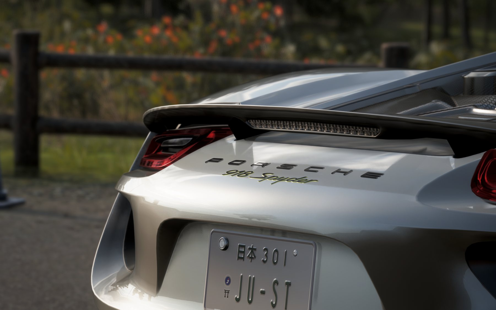

Code, systems & virtual photography.
01 / 03 • VIRTUAL PHOTOGRAPHY
Forza Horizon 6 — Editorial Frames
Kurasi fotografi virtual monokrom-ke-berwarna menampilkan Ferrari 488 Pista, Porsche 911 GT3 RS, hingga aksi drift di lereng Gunung Fuji.
01 / 03

Selected Index
Karya & Modul Akademik
UTS Pemrograman Web & Sistem Operasi